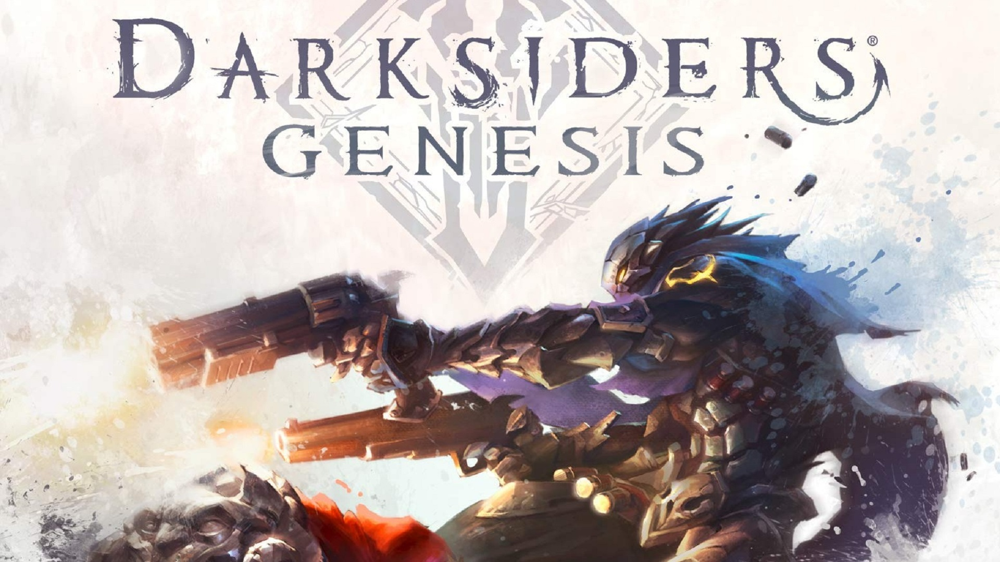

God of War se passa anos depois de God of War 3 e pode ser considerado, de certa forma, como um recomeço para a série.
Depois de ter dizimado praticamente toda a mitologia grega, Kratos sobreviveu e fugiu da Grécia. O novo jogo mostra que ele teve um filho,
chamado Atreus.
Quando a mãe do menino morre, ambos devem cumprir a promessa de levar suas cinzas até o pico mais alto do reino nórdico,
dando início à jornada do game.
O jogo tem como novidade o fato de você ter Atreus andando junto com Kratos, mudando consideravelmente a dinâmica da série.
A criança atua de companheiro durante as lutas, usando seu arco e flecha ou partindo para combate corpo a corpo.
A presença de Atreus também dá mais profundidade ao personagem de Kratos. Outro elemento que mudou foi a câmera e o gameplay.
Agora, você vê a ação em terceira pessoa, por cima do ombro do Deus da Guerra,
que utiliza um machado em vez de suas lendárias Blades of Chaos.

- Darksiders Genesis -
Darksiders Genesis tem Conflito e Guerra como protagonistas. Ambos são Cavaleiros do Apocalipse e servem ao Conselho.
Sua missão é manter o equilíbrio universal entre a existência de anjos e demônios.
Quando Lúcifer, Senhor do Inferno, começa a tramar contra o Equilíbrio, o Conselho envia os Cavaleiros ao próprio inferno para descobrir quais os planos do Ardiloso,
para que então possam enfrentá-lo e impedir suas artimanhas.
Genesis se passa antes dos eventos do Darksiders original, e introduz Conflito como o quarto Cavaleiro do Apocalipse de forma jogável
(ele já havia sido apresentado em Darksiders III). O título mostra bastante da relação entre os irmãos, especialmente no que concerne os conflitos e motivações de cada um. Conflito age não apenas por ter jurado lealdade ao Conselho,
mas também para manter a mente ocupada e deixar seu passado para trás; Guerra, por outro lado, inicia a jornada como o soldado mais obediente,
mas começa a questionar suas próprias escolhas e as razões por trás das ordens do Conselho graças ao senso de indagação de seu irmão.
Os diálogos entre ambos ilustram muito bem a personalidade sagaz e piadista de Conflito e determinada de Guerra.
.png)